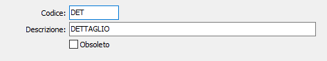

Tipologie ordine
Si tratta di una tabella di servizio che consente di creare e memorizzare macro gruppi di ordini. I suoi elementi devono essere creati dagli utenti che utilizzano la procedura Ordini, e vengono inseriti nelle Causali ordini.

CODICE: codice alfanumerico di 3 caratteri per identificare la Tipologia in esame. Sul campo sono attive le funzioni di ricerca (F9) sulla tabella Tipologie.
DESCRIZIONE: campo alfanumerico di 50 caratteri per descrivere la Tipologia.
OBSOLETO: flag attivabile dall’utente per inibire il possibile utilizzo dell’elemento di tabella in esame nelle successive transazioni.